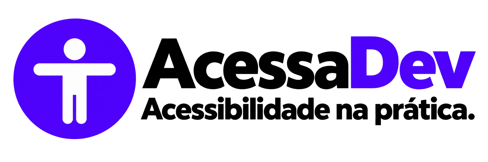

Visão original
Referência sem simulação.

Compare a visão original com uma simulação educativa e descubra como criar interfaces mais acessíveis.
Esta é uma simulação educativa; ela não representa integralmente a experiência de cada pessoa.
Referência sem simulação.
Simulação educativa de catarata em intensidade moderada.